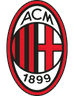

Статистика матча
5-е место, 18 очков
1-е место, 25 очков
Милан выиграл оба последних дерби в чемпионате со счётом 1:0.
Салемакерс, Терраччано, Габбия, Чуквуэзе, Лофтус-Чик — травмы; под вопросом Рабьо, Морейра, Хила, Томори
Лаутаро Мартинес — травма; под вопросом Павар, Стоунз, Кёртис Джонс
Форма — последние матчи, самый свежий справа. В — победа, Н — ничья, П — поражение.
Разбор матча
Интер лидирует с 25 очками и выиграл четыре матча подряд, а у Милана после 2:4 от Болоньи выпала почти вся оборона.
У хозяев нет Габбии, Салемакерса, Лофтус-Чика, под угрозой Томори. У Интера нет Лаутаро — главный риск. Коэффициент 2.10 даёт небольшой перевес.
Милан — Интер: прогноз на миланское дерби
Дерби делла Мадоннина в 10-м туре Серии А проходит при очень разном настроении команд. Интер Кристиана Киву делит первое место с Лацио (25 очков, восемь побед и ничья, без поражений), а Милан Рубена Аморима после домашнего разгрома от Болоньи 2:4 опустился на пятое место с 18 очками. Наш прогноз — победа Интера.
Форма команд
Милан разгромил Зальцбург 4:0 в Лиге Европы и обыграл Аталанту 3:2, затем проиграл Борнмуту 0:3, победил Удинезе 2:0 и уступил Болонье 2:4. В последнем матче хет-трик сделал Самуэль Мбангула, а трибуны освистали команду. Оборона Милана пропускает слишком много.
Интер после поражения от Брюгге 3:4 в Лиге чемпионов выиграл четыре матча подряд: у Болоньи 3:1, у Шахтёра 1:0, у Фиорентины 2:1 и у Венеции 2:0. Команда не всегда блестяща, но умеет добывать результат.
Составы и потери
У Милана настоящий кризис. Не сыграют Салемакерс, Терраччано, Габбия, Чуквуэзе и Лофтус-Чик. Под вопросом Рабьо, а также Морейра и Хила, которые, скорее всего, восстановятся. Фикайо Томори покинул поле в матче с Болоньей с проблемой бедра и рискует пропустить дерби. Без Габбии и, возможно, Томори оборона хозяев остаётся без основных центральных защитников.
У Интера главная потеря — Лаутаро Мартинес, травмировавший заднюю поверхность бедра. Под вопросом Павар, Стоунз и Кёртис Джонс. Отсутствие капитана снижает остроту атаки, это главный риск для ставки.
Очные встречи
Последние два дерби в чемпионате выиграл Милан, оба раза 1:0: в ноябре 2025 года и в марте 2026-го. Аморим знает, как играть против Интера, и это аргумент за хозяев. Но тогда Милан был в лучшей форме и без такого количества травм.
Мотивация и тактика
Для Милана дерби, возможно, последний шанс остаться в борьбе за титул: отставание от Интера семь очков. Для Интера победа укрепит лидерство. Хозяева будут обязаны атаковать, а Интер умеет наказывать соперника на контратаках и стандартах. С учётом проблем в обороне Милана это важный фактор.
Варианты ставок
- П2 за 2.10 — основной прогноз
- Тотал больше 2.5 за 1.64–1.70
- Обе забьют — да за 1.55
Рынки прогнозов оценивали шансы Интера в 44–46%. Мы, с учётом кадрового кризиса Милана, оцениваем их в 50%, а коэффициент 2.10 предполагает около 48%.
Отдельно о последнем матче Интера. В Венеции команда Киву долго не могла забить, хозяевам даже отменили два гола из-за офсайда, а победу принесли два автогола соперника на последних десяти минутах. Это показывает, что без Лаутаро атака Интера не всегда остра, но команда умеет терпеть и дожимать. Милан, напротив, в матче с Болоньей пропустил четыре мяча на своём поле, причём три из них забил один игрок. Для дерби, где многое решают ошибки в обороне, такое сочетание формы — аргумент в пользу гостей.
Итог: кто победит в миланском дерби
Наш прогноз — победа Интера за 2.10. Лидер в форме, а у Милана выпала почти вся оборона и после поражения от Болоньи упала уверенность. Дерби всегда непредсказуемо, а Интер без Лаутаро, поэтому ставка средней уверенности.
Вопросы о матче
Кто победит в матче Милан — Интер?
Мы ставим на победу Интера за 2.10: лидер в форме, у Милана много травм в обороне.
Сколько голов будет в миланском дерби?
Букмекеры ждут результативный матч: тотал больше 2.5 идёт за 1.64–1.70.
Забьют ли обе команды?
Вероятно, да: Милан пропускает много, но дома атакует. Коэффициент на «обе забьют» — 1.55.
Сыграет ли Лаутаро Мартинес?
Нет, капитан Интера пропустит дерби из-за травмы задней поверхности бедра.
Когда начинается дерби?
31 октября в 22:45 по московскому времени на Сан-Сиро.
Прогноз — оценка вероятности исхода, а не гарантия результата.